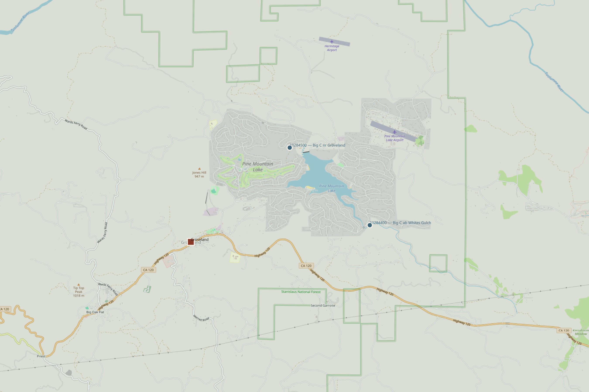
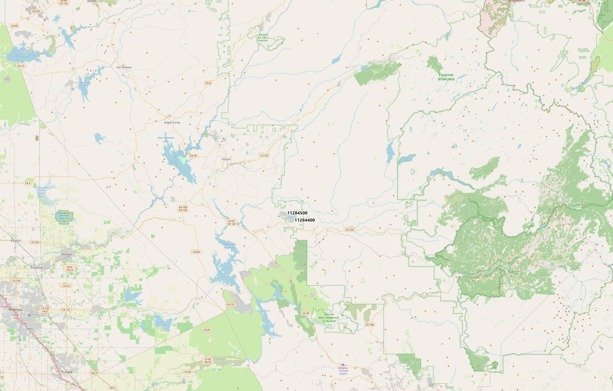

I grew up in Groveland, in the Sierra Nevada foothills where Highway 120 climbs toward Yosemite. There is a creek there called Big Creek, and for a good part of every year it is not a creek at all. It is a dry bed with rocks in it.
Last week I had a Snowflake warehouse full of streamgage data open for unrelated reasons, and I noticed one of the fourteen gages I had loaded was sitting in my own back yard. So I asked it some questions.
The answers were more extreme than I expected.
Where this is


The numbers
Of 13,373 daily values since January 1990, 4,927 recorded exactly zero. Not "very low." Zero. Across the fourteen Sierra gages I had loaded, Big Creek is the only one that ever reaches it.
The longest unbroken dry spell ran 244 days — June 30, 1990 to February 28, 1991. Eight months. The 2013–14 drought nearly matched it at 234.
Then there is the other end
On March 9, 2023, daily mean flow was 87.6 cfs. On March 10 it was 1,820. By March 11 it had already fallen to 695.
Big Creek's ratio of peak flow to mean flow is roughly 200× — the highest in my comparison set by a wide margin. The runner-up, Cherry Creek near Early Intake, sits at 111×. The Merced at Yosemite is 32×. The Tuolumne below Early Intake is 23×.
Big Creek is not simply variable. Its extremes are enormous relative to its ordinary condition — which is, most of the time, nothing at all.
The thousand-fold year
| Metric | WY2015 | WY2017 |
|---|---|---|
| Annual volume | 24 af | 24,643 af |
| Peak daily flow | 2.3 cfs | 1,330 cfs |
| Mean flow | 0.03 cfs | 34 cfs |
| Zero-flow days | 203 | 61 |
| Days above 100 cfs | 0 | 20 |
Same creek. Same 16.4 square miles of hillside. Two years apart. A 1,028-fold difference in annual volume.
If you want a single number that explains California hydroclimate to somebody, that is a strong candidate.
How this actually got answered
Here is the part that is really about data engineering rather than creeks.
I did not write these queries. I asked CoCo — Snowflake's warehouse-native AI agent, renamed from Cortex Code at their Summit in June — and it produced the analysis and a dashboard inside Snowsight.
That worked. It is worth being precise about why it worked, because the reason is not "the AI is good."
Weeks earlier I had built the boring part. A dbt project with staging models that flatten raw USGS payloads, a conformed gage dimension, an incremental fact table of daily discharge, and a rollup called fct_water_year_summary that already knew what a water year is (October through September, so a snowpack and its own meltwater land in the same accounting year), already computed annual volume in acre-feet, already carried percentiles and a flashiness index. Seventy-three tests guarding all of it.
A calendar year splits a Sierra winter in half. Snow that falls in December and the meltwater it becomes the following May end up in two different accounting years, even though they are the same event on a six-month delay.
A water year runs October 1 to September 30 instead, which puts the whole cycle — first storms, peak snowpack, spring melt, summer drought — inside one bucket. It is the standard USGS and DWR convention for exactly this reason, and it is why WY2017 in the tables below means something a calendar year never could: one number that actually represents one winter.
When I asked CoCo about Big Creek, it was reading that. Real column names, real grain, a semantic layer that had already made the hard decisions.
An AI agent in your warehouse is exactly as good as the models underneath it. Point one at raw JSON in a landing table and it will flail, confidently. Point it at a tested dimensional model and it becomes genuinely useful.
The agent did not replace the modeling work. It made the modeling work pay off faster.
Two ways to be wrong about this creek
Both worth knowing, because both are easy traps.
My table says WY2017 peaked at 1,330 cfs. The USGS annual peak table says 2,810 cfs on February 7, 2017. Both are correct. Mine is the highest daily mean; theirs is the highest instantaneous reading. A flood crest lasting three hours gets averaged down across twenty-four. Same flood, two legitimate measurements, and if you mix them you will misstate a flood by half.
Station 11284400 — "Big C above Whites Gulch" — drains 16.4 square miles and is the active one behind everything above. Station 11284500, "Big C near Groveland," drains 25.0. They sit about 1.6 miles apart, and that short distance adds roughly 52% more contributing area. Quote the wrong one and your runoff-per-acre math is off by half.
A small validation I liked: I derived the upstream basin independently from the USGS Network-Linked Data Index and computed its area geodesically in Snowflake. 16.1 square miles against USGS's published 16.4. Two different paths, same hillside.
Before the gage, there was the ditch
The hydrology explains something about the town, which is the part I did not expect to find interesting.
Groveland exists because of gold, and gold mining needs water. But the local creeks — Big Creek among them — go dry for months. They could not support hydraulic mining on their own.
So in 1855 the miners organized the Golden Rock Water Company and built water in from somewhere else. First delivery came on March 29, 1860: roughly forty miles of ditch, including the Big Gap Flume, 2,200 feet long and 280 feet high.
Then in 1915 a second water boom arrived, this one San Francisco's. Groveland became a railroad-shop town and Mountain Division headquarters for the Hetch Hetchy project. O'Shaughnessy Dam was dedicated in 1923.
And today the town's domestic water comes from that same Hetch Hetchy system — not from the creek at the bottom of the hill.
Big Creek has been a hydroclimate sentinel for this landscape and never a water supply for it. One hundred and seventy years of local history is essentially a record of engineering around the fact that this creek is not there half the year.
What I would not claim
Three things I checked and decided not to assert:
That Big Creek feeds Hetch Hetchy. It does not. It is in the broader Tuolumne basin, far downstream and much lower. The reservoir is fed from the high country above Yosemite.
That the gage is dam-controlled. I found a secondary source suggesting an upstream earthen dam. I could not confirm it in any authoritative dam inventory or USGS station record, so it stays out. The flow behavior looks unregulated to me — the zero-flow record alone argues against active control — but "looks like" is not a source.
That any of these numbers imply a recreation rating. Discharge alone does not determine whether a channel is safe or runnable. Gradient and channel geometry do.
Go watch it yourself
Station 11284400 is live. When the next atmospheric river comes through the western Sierra, you can watch this creek respond in something close to real time — USGS live monitoring page.
Median date it starts flowing again after going dry, across 34 analyzed seasons: November 26.
Which makes a dry creek bed outside Groveland into something like a calendar. It tells you when the rain came back.
Data: USGS Water Data for the Nation, stations 11284400 and 11284500; basin geometry from the USGS Network-Linked Data Index. Analysis in Snowflake and dbt; maps in QGIS over OpenStreetMap. Historical detail from the Tuolumne County Historical Society and the Groveland Community Services District. Daily-mean statistics here are computed from the January 1990–present record; the official USGS daily archive for this station extends back to May 1969, and the peak-measurement archive to a historic January 1965 entry. This is the modern chapter, not the whole book.
· · ·